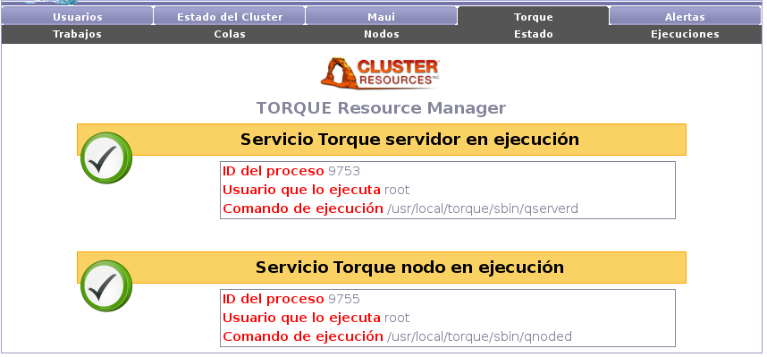

La pantalla principal de Torque, al igual que Maui, nos informa del
estado de los servicios de Torque en el cluster.

Torque cuenta con dos demonios:
- qserverd: este demonio debe contar solamente con una instancia en
ejecución y debe ejecutar en el nodo maestro del cluster. Es necesario
que este servicio se encuentre en ejecución para el funcionamiento
del cluster.
- qnoded: este demonio debe estar en ejecución en cada nodo de cómputo
del cluster. En la pantalla de información de Torque solamente se
muestra el estado del demonio en el nodo maestro. No es necesario
que este servicio se encuentre en ejecución para el funcionamiento
del sistema, si no se encuentra en ejecución simplemente el nodo maestro
no será utilizado como nodo de cómputo.
Ambos servicios de Torque deben ejecutar con el usuario root.
Subsections
Santiago Iturriaga
2008-05-26